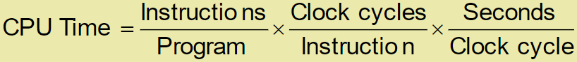
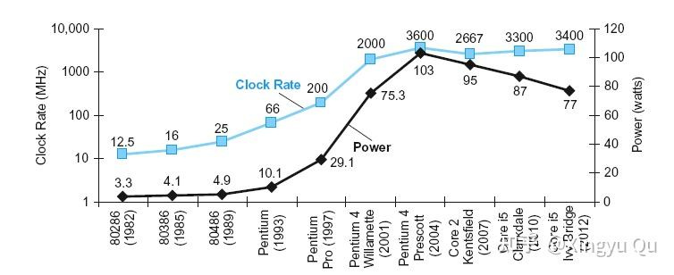
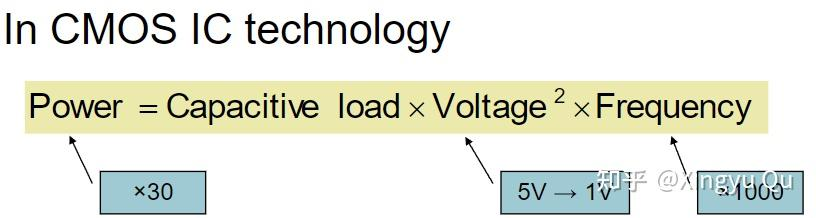
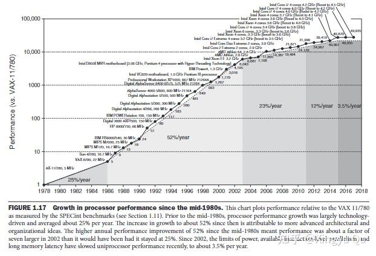
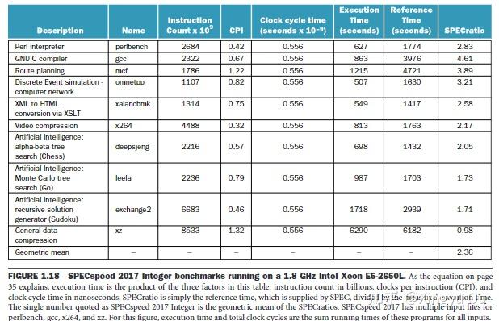

本讲概述计算机体系结构中的核心设计思想，并介绍性能、功耗与成本的基本度量方法。
本系列以 RISC-V 为基础，结合数据通路与控制逻辑实验，逐步建立从指令集到微型计算机系统的整体认识。
本文是系列导论，集中介绍后续内容所需的基本概念。
（一）计算机体系结构中的8个伟大思想
这八个伟大思想会贯穿全书始终。
1. 摩尔定律（Moore's Law）
摩尔定律：单芯片上所集成的晶体管资源每18-24个月翻一倍。
计算机架构师必须预计设计完成后计算机的芯片水平来设计。
2. 面向抽象设计
抽象表示不同的设计层次，隐藏低层细节，给高层更简单的模型，可以提高硬件和软件的生产率。
3. 优先优化常见情形
通过实验与测量识别常见路径，优先优化高频事件，以获得更显著的整体性能收益。
4. 并行
并行计算提升性能。
5. 流水线
将任务划分为多个阶段并重叠执行，以提高吞吐率。
6. 预测
当预测错误的恢复成本可控时，推测执行可以提升平均性能。
7. 存储层次
存储层次将小而快的存储置于上层、将大而慢的存储置于下层，在成本、容量与访问速度之间取得平衡。
8. 通过冗余提高可靠性
冗余组件可用于故障检测、容错与服务恢复，以提高系统可靠性。
（二）计算机性能的衡量
1.执行时间(execution time)
墙钟时间包含操作系统与 I/O 等开销，反映用户观察到的整体响应时间。
2. CPU 时间
CPU 时间是处理器执行某项任务所消耗的时间，包括用户态 CPU 时间与系统态 CPU 时间。
2.1 时钟周期
Clock period（时钟周期）是一个时钟周期的持续时间。例如，250 ps = 0.25 ns = 250 × 10^-12 s。
2.2 时钟频率
Clock frequency（时钟频率）是时钟周期的倒数。例如，4 GHz = 4000 MHz = 4 × 10^9 Hz。
2.3 计算CPU
CPU Time=CPU Clock Cycles×Clock Cycle Time（数量×单位时间）=CPU Clocks Cycles/Clock Rate（数量/速率）
注：如果不同指令之间的CPI差距过大，则应该分别计算不同指令的总周期数再相加。
从公式可以看出，CPU 性能可以通过以下方法提升：
（1）减少时钟周期数
（2）提升时钟频率
（3）在时钟周期、每条指令的周期数与指令总数之间进行整体权衡。
对这对矛盾的理解：
缩短时钟周期可能要求把工作拆分到更多流水级，从而改变每条指令的周期数与相关开销。
增加单周期内的逻辑工作量会拉长关键路径，从而限制最高时钟频率。
处理器设计需要综合考虑关键路径、时钟周期和 CPI。
衡量运行速度的其他单位：
FLOPS：每秒完成的浮点运算次数。
MFLOPS：每秒 10^6 次浮点运算。
GFLOPS：每秒 10^9 次浮点运算。
TFLOPS：每秒 10^12 次浮点运算。
PFLOPS：每秒 10^15 次浮点运算。
3.关于性能的总结

处理器性能主要取决于：
◼ 算法：影响指令数（IC），也可能影响 CPI。
◼ 编程语言：影响指令数和 CPI。
◼ 编译器：影响指令数和 CPI。
◼ 指令集架构：影响指令数、CPI 与时钟周期。
（三）对性能的其他认识
1.功耗墙

处理器频率与功耗的持续增长受到散热和能效约束，这一限制通常称为“功耗墙”。现代处理器因此更多依赖并行性与专用化来提升性能。
现代数字集成电路主要采用 CMOS。动态能耗来自节点充放电，主要与负载电容和电压平方相关：

每个晶体管翻转一次的功耗是一次翻转所需要的能耗和开关频率的乘积：
2.从单处理器向多处理器转变
在功耗与频率扩展受限的背景下，多核处理器通过线程级并行提高系统吞吐率。

3.SPEC CPU基准评测程序
SPEC 维护一组标准化基准程序，用于在统一规则下评估和比较计算机系统性能。

值得关注的是 SPEC分值=参考时间/执行时间。
更多背景与推导可参考《计算机组成与设计：硬件/软件接口（RISC-V 版）》。